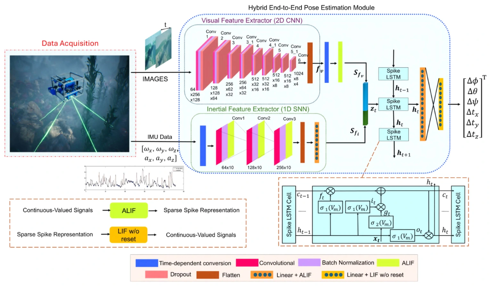

NeuroVIO
A hybrid visual–inertial odometry model that combines convolutional visual features with spiking temporal processing for underwater pose estimation.
IEEE Journal of Oceanic Engineering · Early access, 2026
Method
A conventional CNN extracts visual features. Adaptive leaky integrate-and-fire neurons encode visual and inertial features as spikes. A spiking LSTM models temporal dependencies, and a spiking regression head estimates six-degree-of-freedom pose.


Evaluation
On AQUALOC, the adaptive-threshold model reduced estimated inference energy by 80.4% relative to the non-spiking baseline under the paper’s 45 nm CMOS operation-cost model. Pose error varied by sequence and metric. On h07, translational ATE was 0.0304 m for the adaptive model and 0.0220 m for the baseline. Angular ATE was 1.3024° and 2.1366°, respectively.
Publication
First and corresponding author. NeuroVIO: A Hybrid Neural Network Framework for Visual–Inertial Odometry Estimation.